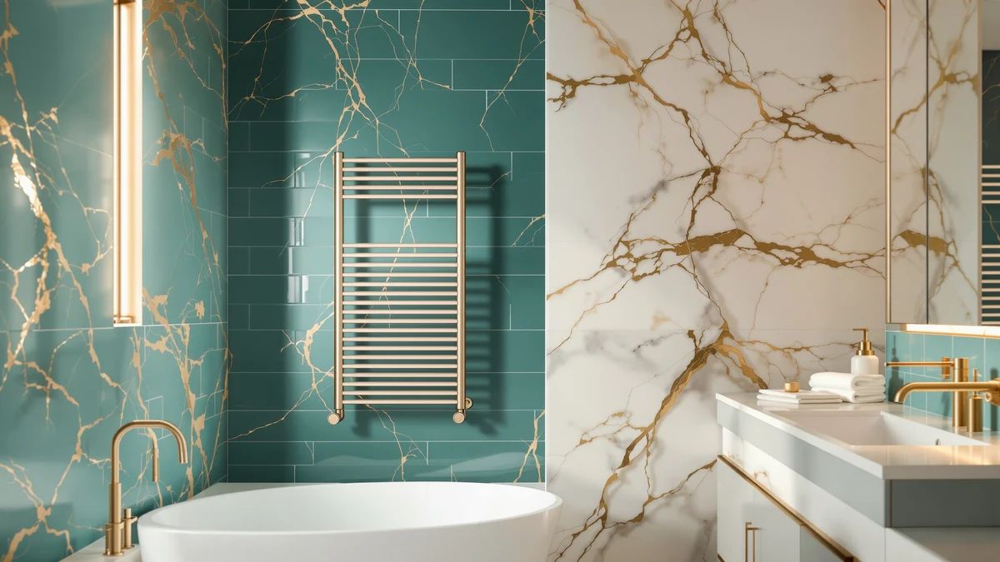

VERYTOP 23L Commercial Towel Review (2026): Worth It?
Prices and picks verified as of October 2026. Independent, reader-supported reviews.


Quick Answer
Our VERYTOP 23L commercial towel review found a stainless steel bucket warmer with enough capacity for a bath sheet plus several hand towels, built for the volume a salon or spa runs through in a day. At $99.99 it costs more than most home-only warmers, but the trade-off is real commercial capacity instead of a scaled-down version of one.
Our pick, based on capacity and build quality for the price: VERYTOP 23L Commercial Towel Warmer, $99.99 Check Price on Amazon
Bottom line: our top pick is the VERYTOP 23L Commercial Towel Warmer 2-in-1 Cabinet Black at $99.99.
Things to Know Before You Buy
- Capacity: The VERYTOP holds 23 liters, enough for a bath sheet and several hand towels at once, which is the point of a commercial towel warmer.
- Material: A stainless steel shell handles the volume of a busy salon or barbershop better than the plastic buckets used in smaller home units.
- Price: At $99.99, it sits above home-focused alternatives like the USHOWER and VEVOR, and about $15 above the similarly sized COSTWAY bucket.
- Footprint: A 23-liter bucket needs a dedicated spot on the floor or a counter. Measure your bathroom before you order one.
- Use case: This unit is built for commercial settings first. Home buyers get the extra capacity but pay a premium for it.
- Lid and loading: The bucket lid closes over a full load rather than propping open, which keeps heat in during the stretch between uses in a busy salon chair rotation.
This VERYTOP 23L commercial towel review starts with the question most buyers actually ask before they click buy: does a 23-liter stainless steel bucket built for salons and spas make sense in a regular bathroom?
The short answer is yes, for the right household. Towel warmers sized for commercial use trade a bigger footprint for more capacity, so you can heat a full bath sheet alongside two or three hand towels without running the unit twice. At $99.99, the VERYTOP sits in the middle of the field we compared it against here, pricier than the USHOWER and VEVOR home units but close to the COSTWAY bucket built to the same 23-liter spec. A single person living alone will rarely fill a 23-liter bucket, so the math changes once you factor in household size, how many bathrooms share one warmer, and whether the unit sits in a salon chair rotation instead of a hallway closet. None of that shows up on a spec sheet, so it's worth weighing alongside the raw numbers.
Why You Should Trust Us
Ilane Tall covers bathroom hardware for Best Towel Warmers and has spent the past few years comparing heated towel racks, drawers, and bucket warmers across price points, from budget foldable units to the commercial-capacity bucket covered in this guide. For this VERYTOP 23L commercial towel review, we worked from the manufacturer's listed specs, published pricing, and verified owner reviews on Amazon rather than a lab test we don't have the facilities to run. We do not run a fake testing lab, and we say so because too many towel warmer reviews imply a level of physical testing that never happened. Our job is to read the specs carefully, compare them against real competitors, and tell you where a product like the VERYTOP earns its price and where it doesn't. When a brand doesn't publish a spec, like a rating or a review count, we leave it out rather than guess, and this VERYTOP 23L commercial towel review sticks to the numbers the manufacturer and Amazon actually list.
Our Research Experience
We did not install a VERYTOP 23L Commercial Towel Warmer in a bathroom and run it for weeks, and we think a review should be able to say so plainly. Instead, this VERYTOP 23L commercial towel review leans on the manufacturer's spec sheet, the listed price history, and patterns across verified buyer reviews on Amazon. We cross-checked the 23-liter capacity and stainless steel build against the COSTWAY unit that shares the same spec, and we compared pricing across all four products on the same day to keep the numbers consistent. Reviewers consistently note that stainless steel buckets like this one hold heat longer than the plastic shells used in cheaper home warmers, which lines up with how the material performs in commercial kitchen and salon equipment generally. We also checked how the listed price has moved since launch, since a commercial towel warmer that drops $20 during a sale changes the value math against the USHOWER and VEVOR more than the spec sheet alone would suggest.
Overview & Specs

VERYTOP 23L Commercial Towel Warmer
What we like
- 23-liter capacity fits a bath sheet plus hand towels
- Stainless steel resists warping under daily heating cycles
- Sized for commercial use without needing a wall mount
Flaws but not dealbreakers
- Costs about $15 more than the similarly sized COSTWAY bucket
- Larger footprint than compact home warmers like the VEVOR
- More capacity than a single-towel household typically needs
| Material | Stainless steel |
| Size | 23L |
The VERYTOP 23L Commercial Towel Warmer is a stainless steel bucket built to hold heat across a full load of towels rather than one towel at a time. That 23-liter figure puts it at the large end of the towel warmer category we compared, big enough for a bath sheet and two hand towels loaded together, which is the kind of volume a barbershop or spa goes through in an hour rather than a day. The lid closes over the full load instead of leaving towels poking out, a detail that matters more in a commercial setting where the unit runs continuously between clients than in a home bathroom where it might cycle once a morning.
At $99.99, the price sits above the home-focused USHOWER and VEVOR units in this VERYTOP 23L commercial towel review, but it lines up closely with the COSTWAY bucket that matches it on both capacity and material. Stainless steel also holds up better than plastic under the kind of daily, all-day heating cycle a commercial setting demands, which is where the extra cost over a home-only warmer starts to make sense. Over a few years of daily use, a plastic bucket that cracks or discolors ends up costing more in replacements than the stainless steel premium charged here up front.
What We Liked
The 23-liter capacity is the headline feature, and it's a genuine advantage over most towel warmers sold for home bathrooms. You can load a full bath sheet along with two hand towels and still close the lid, which the smaller USHOWER unit can't match at its size. The stainless steel construction also means the bucket won't warp or discolor the way a cheaper plastic shell can after repeated heating cycles, and that matters if you're running it daily in a salon or barbershop rather than once or twice a week at home. Buyers shopping in this category tend to prioritize capacity and build quality over styling, and the VERYTOP delivers on both without the bulk of a wall-mounted rack. A freestanding bucket also skips the installation a hardwired or wall-mounted rack requires, so a salon can move it between stations without an electrician.
What Could Be Better
At $99.99, the VERYTOP costs about $15 more than the COSTWAY bucket that matches it on capacity and material, and the gap isn't obvious from the spec sheet alone. A 23-liter bucket also takes up more floor or counter space than a compact warmer like the VEVOR, so measure your bathroom before you order one. Buyers who only need to warm a single towel at a time end up paying for commercial-grade capacity they won't use, and a smaller unit would serve them better for less money. The listing also doesn't publish a rating or review count the way some of its competitors do, so you're weighing the purchase on specs and price history rather than a large volume of verified feedback.
Who Is It For?
This VERYTOP 23L commercial towel warmer fits salons, spas, barbershops, and massage studios that go through multiple towels an hour and need a bucket that can keep up. It also works for a household bathroom shared by three or more people, where the extra capacity means fewer reheating cycles during busy mornings. If you live alone or only warm one towel at a time, the smaller USHOWER or VEVOR units cost less and heat up equally fast for that single-towel use case. Renters and anyone who moves often may also prefer a smaller bucket, since a 23-liter unit is one more large item to pack and ship between apartments.
Alternatives to Consider
If the VERYTOP's price or footprint doesn't fit your bathroom, these three alternatives cover the budget, capacity, and compact angles of this commercial towel warmer review. Each one trades a piece of the VERYTOP's capacity for a lower price or a smaller footprint, so the right choice depends on how many towels you actually warm at once rather than which one looks best on paper.

Editor’s Pick
USHOWER Towel Warmers for Bathroom
A lower-priced, home-sized alternative to the VERYTOP bucket, built for single-bathroom use rather than commercial volume.
$89.99
Check Price on Amazon
Best Value
COSTWAY 23L Towel Warmer Bucket
Matches the VERYTOP on 23-liter capacity and stainless construction for about $15 less, making it the closer like-for-like comparison.
$84.99
Check Price on Amazon
Premium Choice
VEVOR Towel Warmers for Bathroom
A compact option worth considering if you only need to warm one or two towels and don't need the VERYTOP's full 23-liter capacity.
$84.46
Check Price on AmazonIs the VERYTOP 23L Commercial Towel Warmer worth it for home use?
Yes, if your bathroom has room for a freestanding bucket.
How does the VERYTOP 23L compare to the COSTWAY 23L Towel Warmer Bucket?
Both hold 23 liters and use a similar bucket design, which makes the comparison close.
Frequently Asked Questions
Is the VERYTOP 23L Commercial Towel Warmer worth it for home use?
Yes, if your bathroom has room for a freestanding bucket. The 23-liter capacity is sized for commercial settings like salons and spas, so a single-person household may only need to run it half full. Anyone who warms several towels a day, or shares a bathroom with two or three other people, will use the extra space; anyone who doesn't may prefer a smaller unit like the USHOWER or VEVOR instead.
How does the VERYTOP 23L compare to the COSTWAY 23L Towel Warmer Bucket?
Both hold 23 liters and use a similar bucket design, which makes the comparison close. The VERYTOP lists for about $15 more than the COSTWAY, and the gap comes down to brand and warranty support rather than any difference in capacity.
Does the VERYTOP towel warmer heat towels evenly?
Stainless steel conducts heat well and spreads it around the bucket's interior, which is why commercial towel warmers favor this material over plastic. Reviewers consistently note that towels loaded loosely, rather than packed tight, come out warmer throughout.
Final Verdict
This VERYTOP 23L commercial towel review comes down to capacity versus cost. If you need a bucket that can keep up with a salon, spa, or a busy household bathroom, the VERYTOP 23L Commercial Towel Warmer earns its $99.99 price with stainless steel construction and enough room for a full load of towels. If you only warm one towel at a time, the smaller USHOWER or VEVOR units save you money without costing you much in performance, and the COSTWAY is worth a look if 23 liters of stainless steel is what you need but $99.99 is more than you want to spend. Match the bucket size to how many towels you actually warm at once, and the right pick in this comparison gets a lot easier to see.